像素政大：校園永續版
最早的版本從政大校園出發，用像素地圖畫出四維堂、噴水池和校門。同學完成自備餐具、正確回收等永續行動，經 AI 拍照驗證後獲得遊戲道具與積分，企業則能取得碳數據用於 ESG 報告。
以此版本獲政大 AI 跨域 × 永續創新競賽佳作，以及中鼎永續生活實驗室獎全國前 20・佳作。
像素地圖ESG 積分政大校園
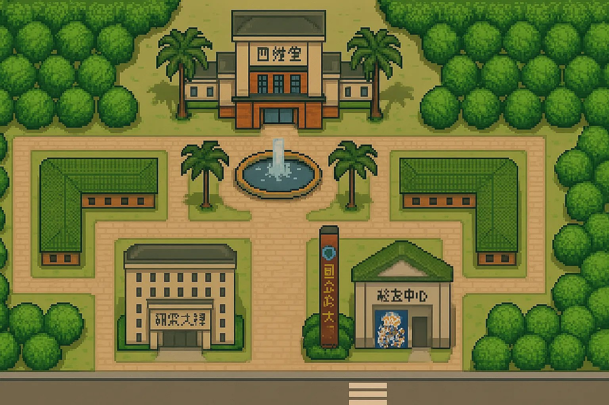
從政大校園出發，走進深坑老街與沉入水底的永安，再回到可以自由走進去的 3D 政大。政大一百歲，這座校園正等著裝進你的故事。
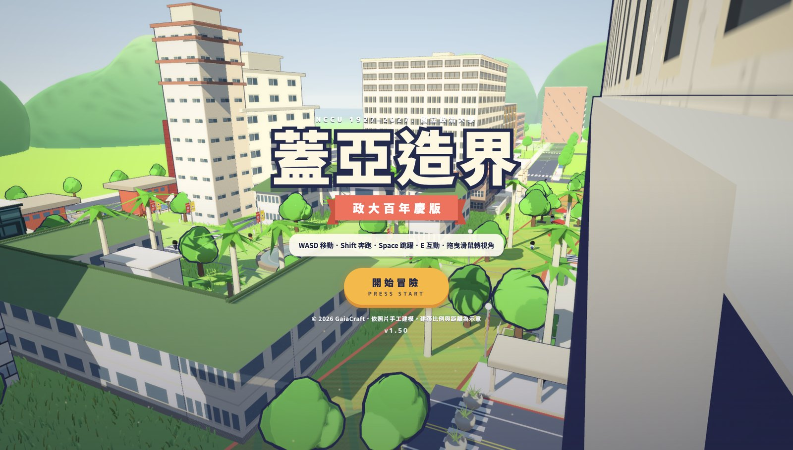
蓋亞造界最初是政大校園裡的永續遊戲。後來我們走出校園，來到深坑老街，再走進石碇的永安：一座在 1987 年翡翠水庫完工後沉入水中的村莊。在那裡聽到的故事，讓我們決定用遊戲把即將消失的地景和記憶保存下來。
最早的版本從政大校園出發，用像素地圖畫出四維堂、噴水池和校門。同學完成自備餐具、正確回收等永續行動，經 AI 拍照驗證後獲得遊戲道具與積分，企業則能取得碳數據用於 ESG 報告。
以此版本獲政大 AI 跨域 × 永續創新競賽佳作，以及中鼎永續生活實驗室獎全國前 20・佳作。

蓋亞造界第一次離開校園，來到深坑老街。紅磚街屋、廟埕、老榕樹與一間間老店都畫進像素地圖，玩家可以在街上遇到村民、聽他們說老街的故事，把地方創生變成一場可以實際走訪的冒險。
以「GaiaCraft 2.0：AI 驅動虛實整合地方創生平台」獲 114 學年度全國人文社會永續行動創新應用競賽佳作。
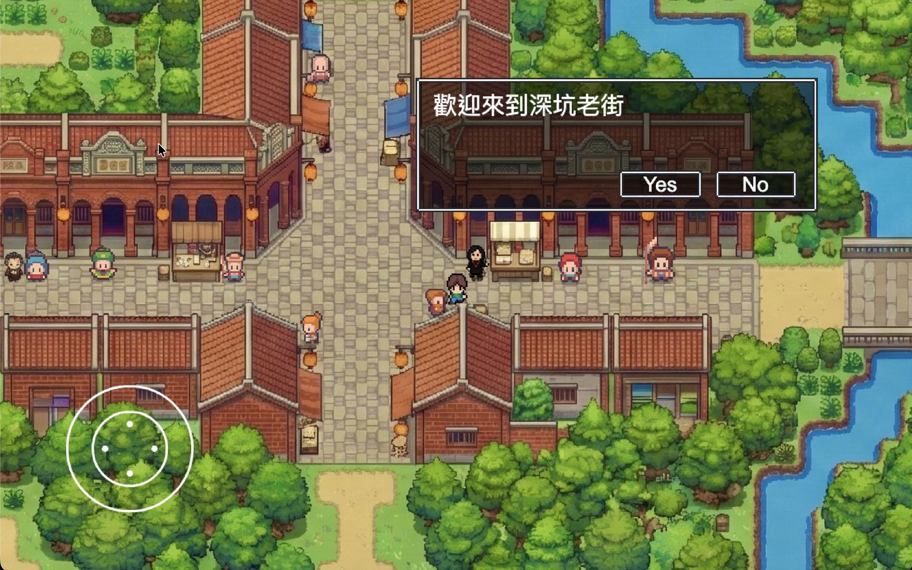
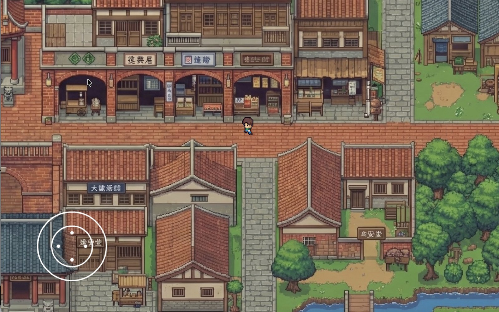
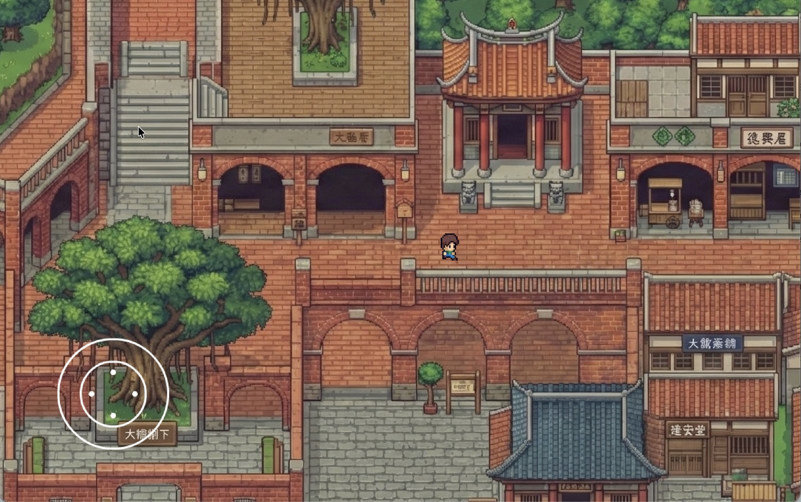
接著我們跟著資管系李怡慧老師的政大 USR 計畫，走進石碇永安。一起走訪村裡的老屋、訪談耆老，蒐集地名演變、茶產業、魔神仔與廟宇信仰的記憶，整理成紀念小冊《永安的記憶》送給長輩。再用語音辨識加上大型語言模型，把口述轉成遊戲素材，重建翡翠水庫旁的村莊。
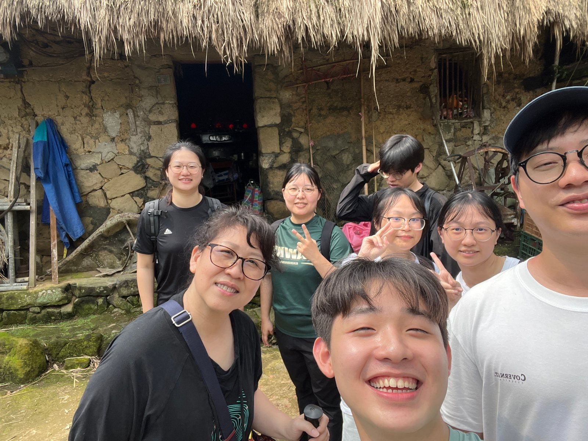
村口那面寫著「失落村莊美景」的牆，我們照著實地拍下的樣子畫進遊戲裡。
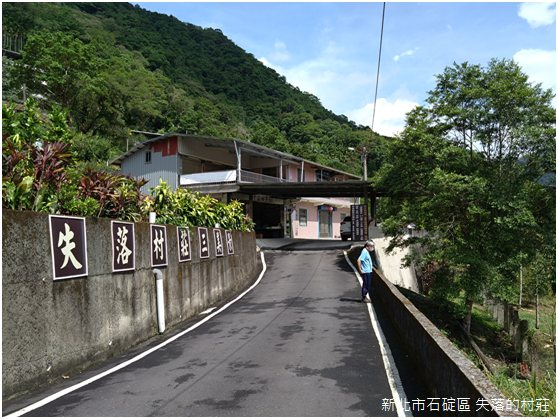
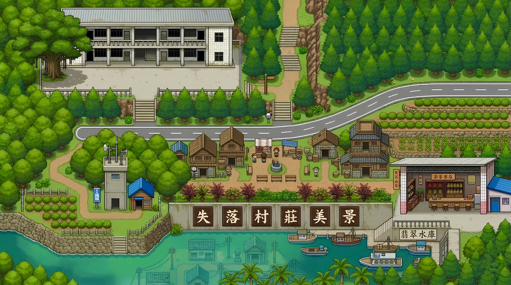
把校園永續機制帶進政大商學院：師生透過 LINE 回報永續行為換取獎勵，即時排行榜顯示在商院一樓大廳。
獲 2026 商學院永續行動提案競賽經費支持，實際落地。
記錄深坑炮子崙一位老店主的故事：用 AI 記憶分身保存他的在地知識，再化成實地走訪的定位遊戲，讓記憶一代代傳下去。
玩家潛入水面下，走進沉沒的永安。以 Godot 製作，村民 NPC 接上 AI 對話並會記得玩家說過的話，每段交談都像在聽長輩說故事。2026 年 9 月上架 itch.io，提供網頁、Windows 與 macOS 版本，並列為政大永續人文創新的代表作品。
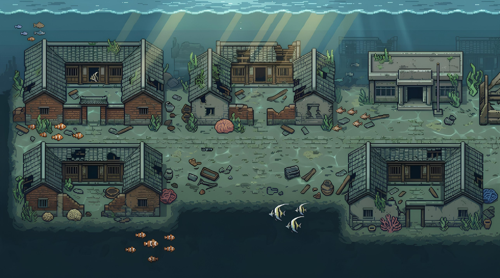
繞了一圈，我們帶著在地方學到的方法回到政大，從平面像素跨進網頁 3D。玩家從指南路二段的校門出發，沿著校園大道走到四維堂，一邊探索一邊收集散落各處的校園故事。建築依照片手工建模，預計在 2027 年政大百年校慶開放師生與校友遊玩。
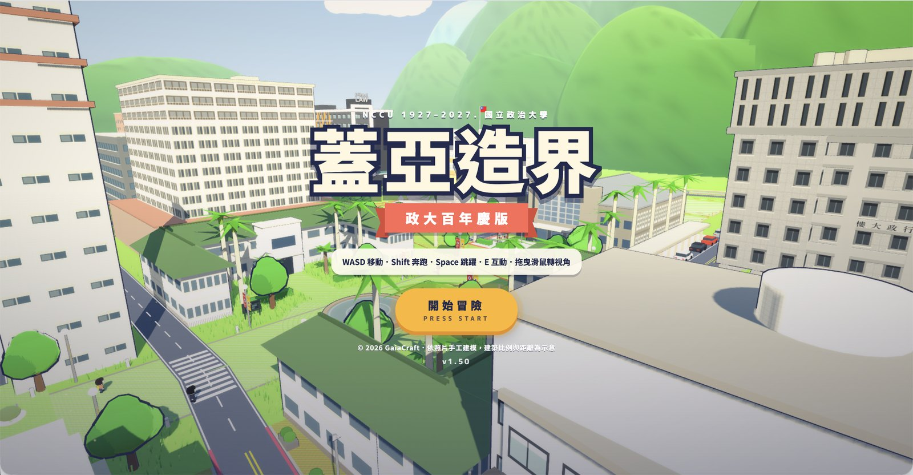
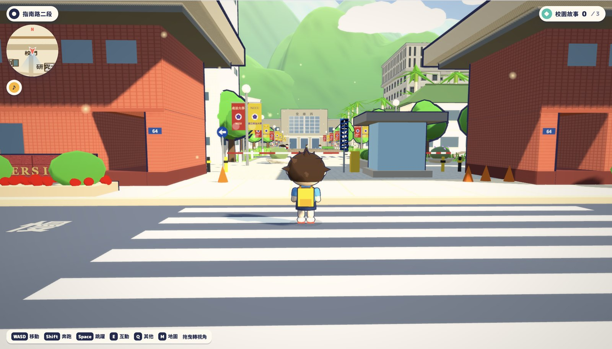
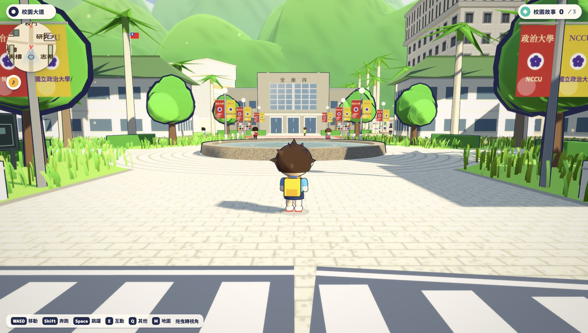
從 2025 的一張像素地圖，到 2026 可以走進去的 3D 校園——這座校園，正等著裝進每個人的政大記憶。
未來每一則投稿都會被放回它發生的地點。在 3D 政大裡走到那裡，就會看見那段故事。以下為示意內容〔待徵集〕；點地圖上的地點看看。
一張照片、一段文字，都能變成 3D 政大裡的一個地點故事。經審核後放進遊戲，並註明你的屆別與名字（可匿名）。
示意，尚未開放收件。
我們能把故事做進遊戲，因為過去兩年就在做這件事。
以 3D 政大為底圖，設計一條可以實際走一遍的校園路線：從校門到四維堂，每一站解鎖一段校園故事。
把在地茶文化帶進遊戲，讓玩家在活動現場邊玩邊認識包種茶。
Press Kit 事實表
2025 政大游泳隊起步；從 2D 像素地圖走到網頁 3D；3 項競賽獲獎、1 項商學院經費支持；2027 政大百年校慶。圖片與授權素材〔待填〕。
蓋亞造界誕生於政大游泳隊。來自不同科系的隊員，就像游泳的四種泳式，在能力、專長和個性上互相補位，從零開始做出第一版蓋亞造界。